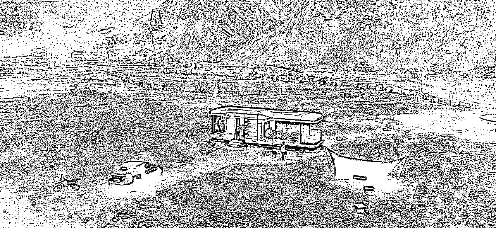

来源：https://kv6btk7fh2.feishu.cn/docx/MCI6dFPCfobqemxdw2EciNxKnXd
我一直在思考一个问题，为什么在2022年中旬之前，我一直仿佛对互联网的流量天然屏蔽避而不闻，从来没有系统的去研究过互联网流量的玩法。身为一个一直深处创业一线的人，所有新的流量平台或工具出来时，都有涉猎，但也完美地错过了抖音、快手、小红书的第一波红利。
多年之后，当我向内看审视自己的决策思维时，发现那个时候，我们的项目确实不缺流量，或者说，我们打造的项目靠自然流的UGC已经达到比较好的运营状态，这让我形成了一种思维方式「只要把项目打造好，自然会不缺流量」、「缺流量的都是项目本身不够优质」。这个想法某种意义上是对的，但不完整，毕竟人的认知的建立都是从盲人摸象中拼凑而成。
这个名字叫做“火星咖啡登陆计划”的项目，让我看到了实体项目流量的爆发性、对于圈层的穿透力和不断破圈的持久度。这个项目有三个重要里程碑：
1、开放的第三天，抖音POI浏览量突破了500w，一年内全网总曝光超1亿次；
2、半年内小红书自然流笔记超过1w篇；
3、项目净利润率超过85%，项目利润投资回报率超过10倍；
策划和设计过程我们做了几个重点的动作：
1、为这个项目做了名称定义，并设计了一套很酷的VI（后来传播的关键）；
2、与场地合作方谈了非常好的条件，没有成本压力，经营上可以随心所欲；
3、设计了一整套引流到升单的产品体系，让客单价从30元开始，可以向上触达到500元，提升了营收天花板；
4、塑造内容，引发事件，对于有传播属性的客户和需求，极力满足效果并传播；
这个过程中，我们也获得了几个重要的结论：
1、好的内容是永远是最好的营销；
2、项目的精神与外在的一体化呈现是传播的锚点；
3、好的商业变现体系是好项目的命脉；
3、保持谦卑，不要傲慢
2022年6月，偶然间发现了一片废弃的采石场旧址，背后是一片被开采一般的断层山脉，这里是无人区，置身其中第一眼就被震撼到，结合之前看到的太空舱产品，就开始琢磨如果做一个咖啡业态，让这里成为可以打卡的场域。那几年一直快速拓展新项目，项目灵感迸发并且开发项目也有手感。
这个项目的场地方是当地的一家地产公司，这里是其矿山修复项目的一部分，平时封闭无人。我们提出这个项目方案后，预计会给其地产项目带来不错的话题、曝光以及到场人次。因此，合作方非常支持我们的想法，并且不要求任何利益上的回报，也没有任何成本，这样没有了任何隐形压力。
说干就干，快速落地。

一、流量飞轮
因为有多年文旅咖啡的经验，如果这个项目得到市场认可，我设想的流量飞轮结构如下：
因为风格极其独特与小众，非常适合小红书的调性。项目正式开放之前，邀请了几位认识的小红书小达人来拍照体验。流量飞轮开始滚动，也是源于其中爆的一篇。因为极强高辨识度的视觉风格、极其小众、拍照的苍茫的美感、很像外太空的感觉，引发了剧烈的传播。
真正让流量上升到另一个量级的原因是“破圈”：
1、地域破圈：辐射范围已经不只京津冀，最远的顾客从河南开车过来；
2、阶层破圈：从普通人阶层，破圈到大V和明星阶层，进一步号召粉丝的热情；
3、场域破圈：因为独特的场景，得到了很多车企活动的青睐，尤其是“越野”、“新能源科技”相关主题的活动；
形成了流量飞轮的快速传导。
消费者的买点很明确——拍出来差异化大片领先朋友圈。流量传播的源起于小红书，先是在小红书带动了一大波博主的流量，毕竟这个群体是对流量源最为敏感、反应最快速，而且整体的输出质量高，流量进入正循环。因为照片风格强烈， 低粉爆文的比例很高。项目开放的2周之内，看到的大部分客户都是小红书博主。
与此同时，抖音同步在爆，3天之内，POI的总播放量突破500w，大众点评各种榜单第一，撬动了几万人想来。
二、品牌塑造
我认为，一个好的文旅项目，一定是「平面视觉」、「产品设定」、「场域体验」三位一体的平衡。三个核心要素的完美搭配以及每一个要素的塑造水平，决定了这个项目整体水平。
总结我的品牌塑造的方法论几个步骤：
1、根据项目的场域特点，起一个有画面感、有差异化定位、好记的名字；
2、找好的平面设计公司设计一套符合调性品牌VI，Logo、元素、杯和袋几个部分就够用；
3、设定好整个场域里，最能代表项目风格特点的1-2个视觉锚点，引发到场客人主动传播，不断加强单点传播的锐度；
4、根据流量平台顾客的传播反馈，不断调整“消费者关注的品牌传播点”。
5、产品设定的一致性。咖啡是任何针对年轻人场景最丝滑匹配的产品，是场景需要咖啡业态。
我们的项目还有一个理念，就是提供恰到好处的体验。
我们深知这样一个项目，从客座舒适度、温度、可到达性、产品选择等很多方面，都有很多不足之处，但核心能力“震撼的场景”、“炫酷的品牌视觉”、“好拍的元素”我们能给足。
「顾客知道自己买的是什么，我们也要知道自己卖的是什么」
三、产品设定
根据营业目标，要达到综合利润率85%以上，搭建了从低到高，30元-500元的立体产品体系。咖啡作为流量产品，到场客人都会主动购买，相当于「门票」（但不强制收取），后面的二消，是给顾客围绕「拍出炫酷照片」这一核心买点设计。
这个逻辑结构可适用于更多的文旅咖啡项目，产品结构上一定是「现制产品+零售商品+高附加值服务」，实现营业额、利润和人效天花板的突破。
一个项目的成功，是「天时地利人和」的结果。也是流量飞轮、品牌塑造、产品设定完美结合的产物。好项目的设定条件，往往不可复制。但是方法论和思维模式，可以参考和学习。
从我自己操盘项目经验来看，很多人的项目后来出问题都是没有坚守初心。比如，随意改变购买规则（从自愿消费到强制消费才能进入）、随意涨价或降低产品品质、售卖与调性不符的产品和服务等。所有决策上的改变，本质上是对每一位消费者没有敬畏之心。
流量的产生，也是一波一波消费者推动的正循环，静态的场景不是流量的来源，口碑潜移默化陷入负面循环而不自知，是项目结束的终极原因。